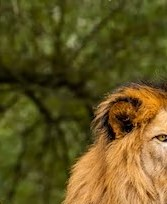
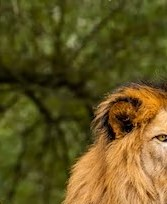

Mantella
The Mantella is a species of amphibian in the family Mantellidae. They are found primarily in Madagascar and surrounding islands. These frogs are small in size, usually growing to be about 1-2 inches in length.
In terms of diet, Mantellas are opportunistic feeders and will consume a variety of small insects and other invertebrates. Some of their favorite foods include ants, termites, spiders, and other insects. They have also been known to consume small vertebrates such as geckos and skinks.
In the wild, Mantellas hunt for food at night and are most active during the rainy season. They use their keen sense of sight and hearing to locate prey and capture it with their sticky tongues. Mantellas are also known to be territorial and will defend their feeding grounds from other frogs.
In captivity, Mantellas can be fed a variety of small insects such as crickets, mealworms, and fruit flies. It is important to provide a balanced diet for these frogs and to ensure that their food is appropriately sized for their mouth. It is also recommended to dust their food with a calcium supplement to ensure proper nutrition.
Overall, the Mantella is a unique and fascinating species of amphibian that can make a great addition to any terrarium setup. With proper care and attention, they can live a long and healthy life in captivity.
.avif)
.avif)
.webp)
.avif)
.avif)
.avif)
 
